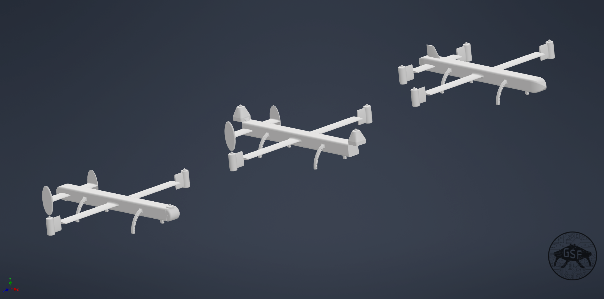
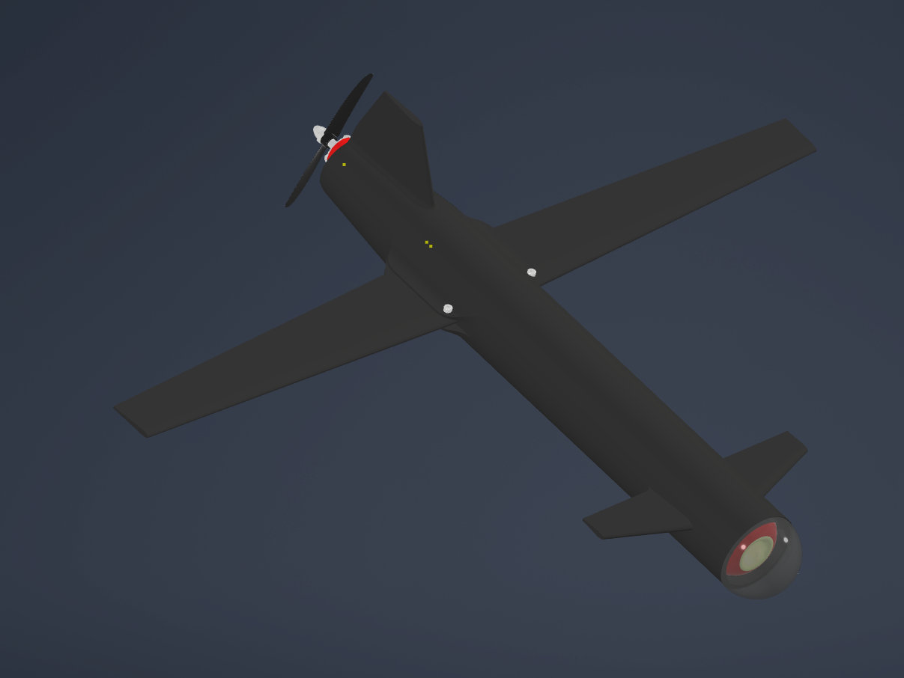
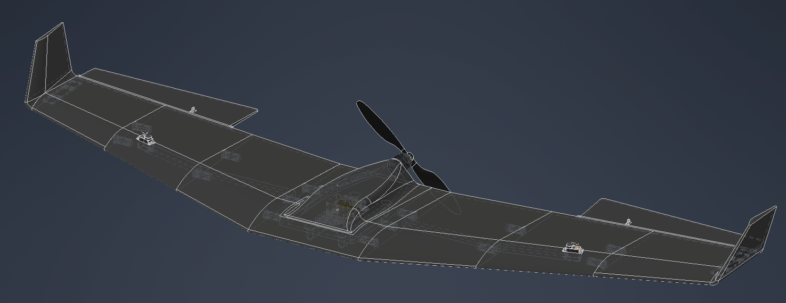
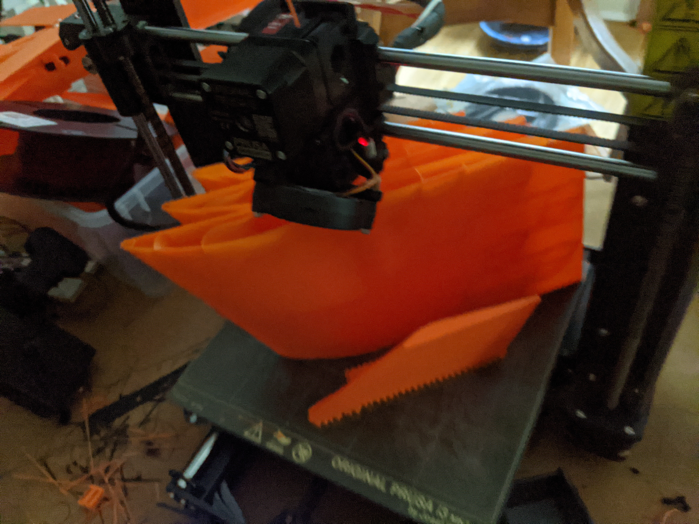
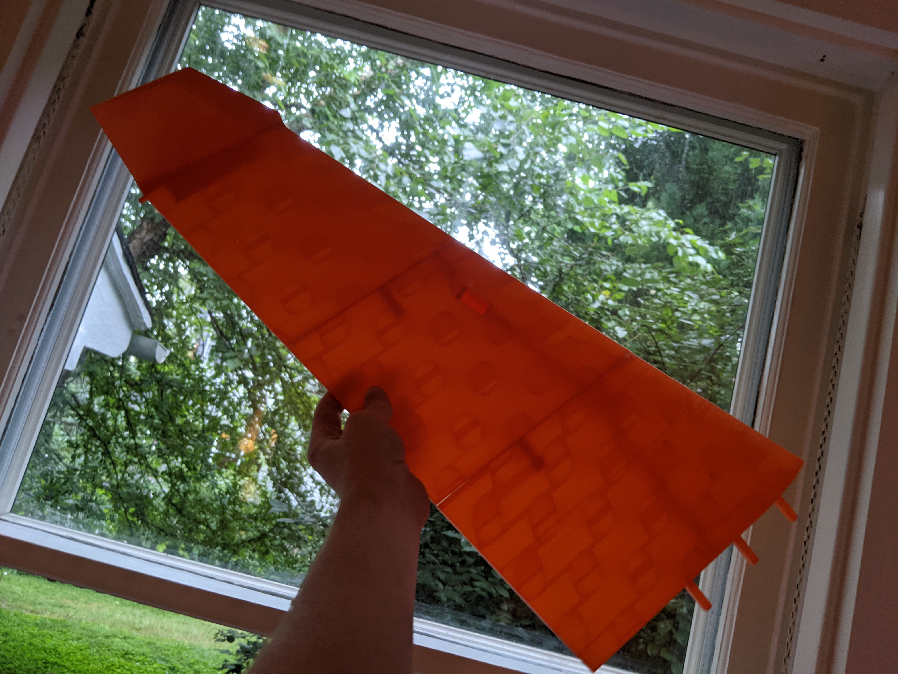
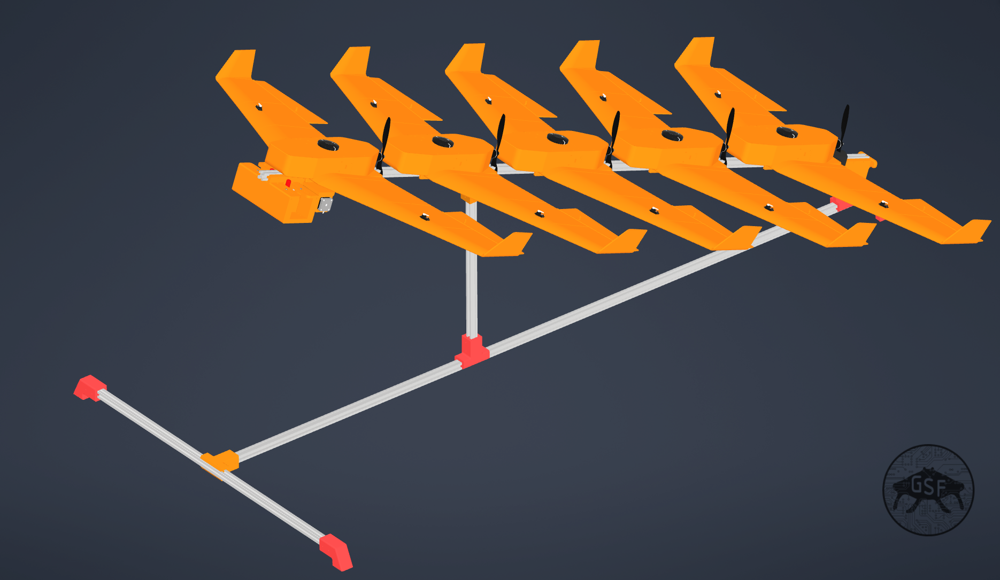
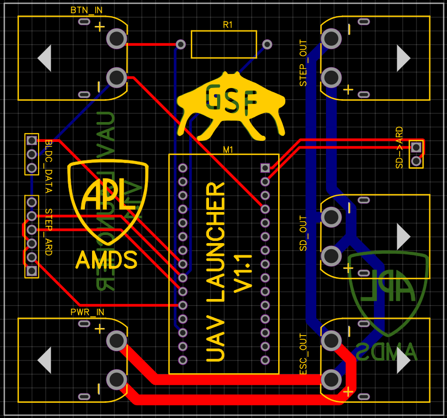
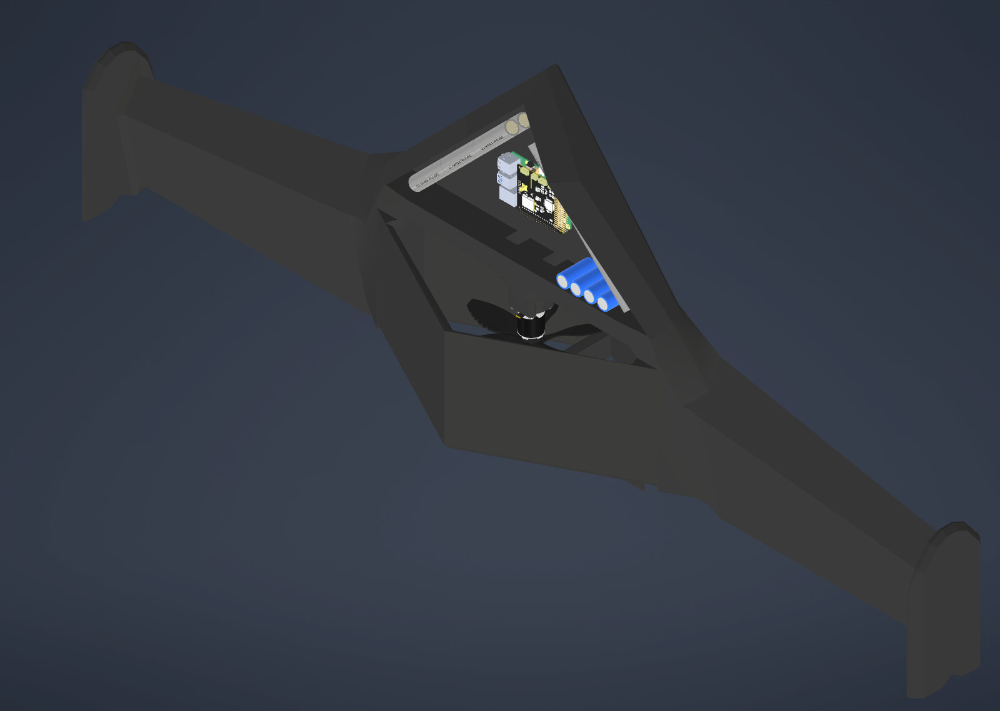

My 3D printed UAV airframe, with my mentor for scale
I have been working at APL since Summer of 2021. Over my time there so far I have worked on designing and developing physical hardware for testing UAV swarm development, and algorithms developed by my mentor, Adam Berlier. Along with this work, I conducted research on 3D printed airframe materials. Here are some of my projects I worked on with this organization, arranged in chronological order.
VTOL concepts
The first thing I produced for APL was a set of concept designs for a search and rescue VTOL drone, which was unfortunately abandoned by the sector.
Swarm Prototype 1
When I first caught wind of the idea of a drone swarm project, called "Peuco" after a type of colaborative hawk, I quickly made my first model, a swing wing drone which could be fit into a tube.

First stealth drone
After more information came to light about the project, I decided to make a design that played to the stealth demands of a future drone swarm. This model featured sharp edges, a unique wing profile, and a shrouded propeller.
First generation seabat
As the demands for the project were finally specified, I designed my first UAV platform. The seabat (named after the batfish, of course) was a fairly large UAV designed to be entirely 3D printed. However, its electronics casing was too small, leading to the development of the future version.

Expanded seabat
Seabat wing print in progress
Assembled seabat wing against the sun
Now featuring a full sized electronics compartment, this version was finally ready for 3D printing.
flywheel powered UAV launcher
PCB for control of launcher
In order to deploy a prototype swarm, I developed a flywheel powered autofeeding launcher.
Angler: long range tailsitting UAV
Seeking to simplify the proscess, and produce a more stealthy demonstration model, I developed the Angler, the successor to the Seabat. This version was a tailsitter, meaning that it took off vertically from its tail.
After discussing my design ideas with my mentor, I was instructed to create a presentation to contain and flesh out my concepts for the future of UAV swarm development.
Continuing on with this track, I delved into research for a while, and performed a study on LW-PLA and its properties.

I went on to create an abstract and poster, which were then presented at the IEEE conference at Princeton.